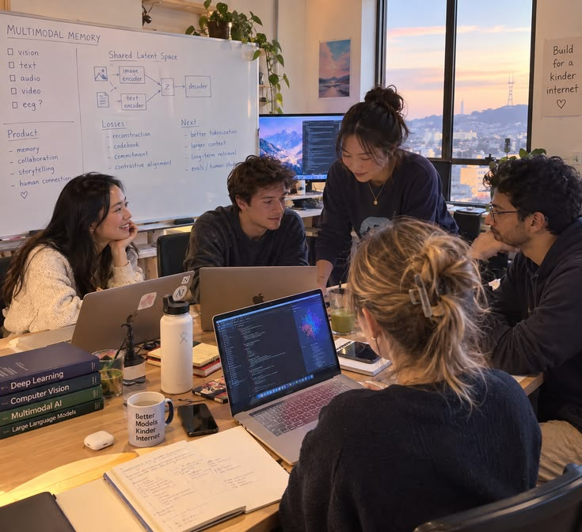

TECHNOLOGY
Tech & Programming Club
Ruang bagi mahasiswa yang tertarik pada teknologi, pemrograman, pengembangan website, UI/UX, dan inovasi digital.
- Programming & Web Development
- UI/UX dan Product Design
- Eksplorasi teknologi digital